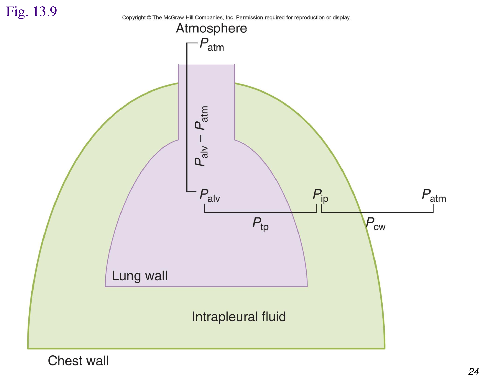
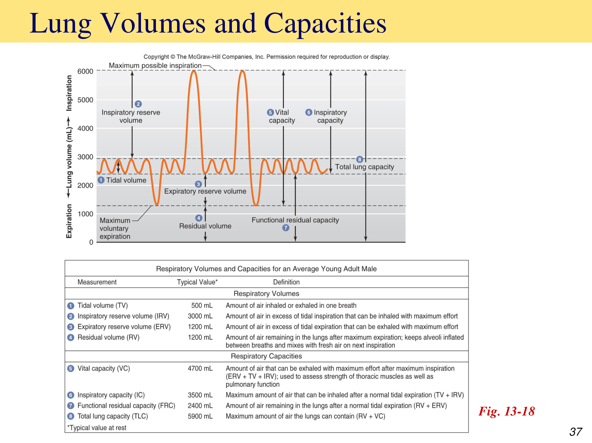
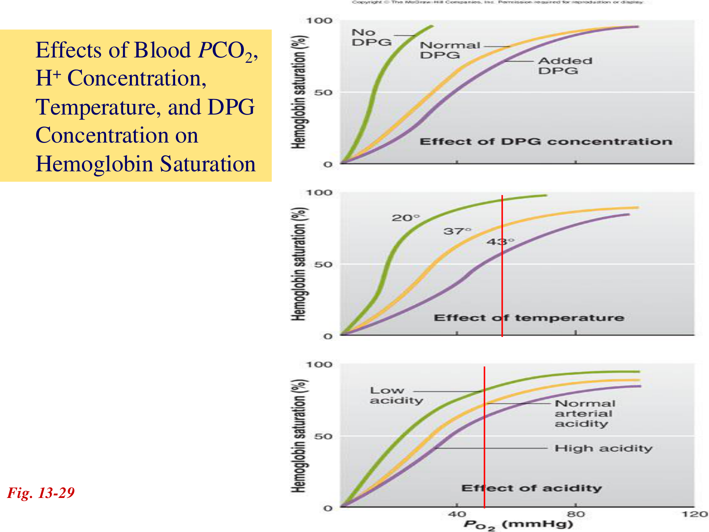
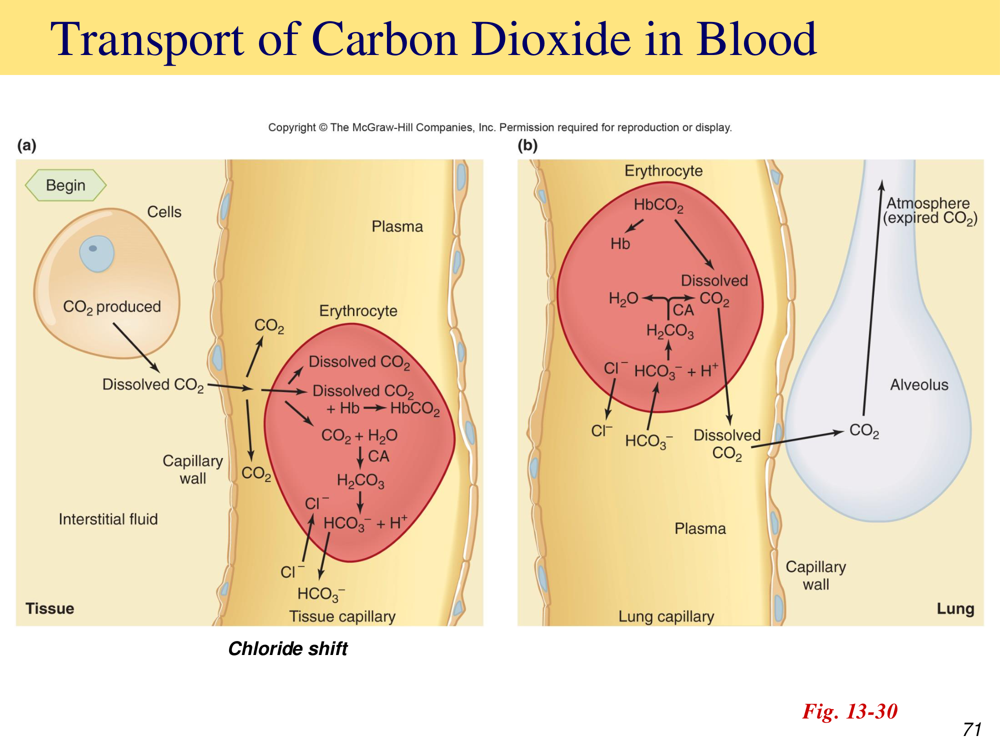
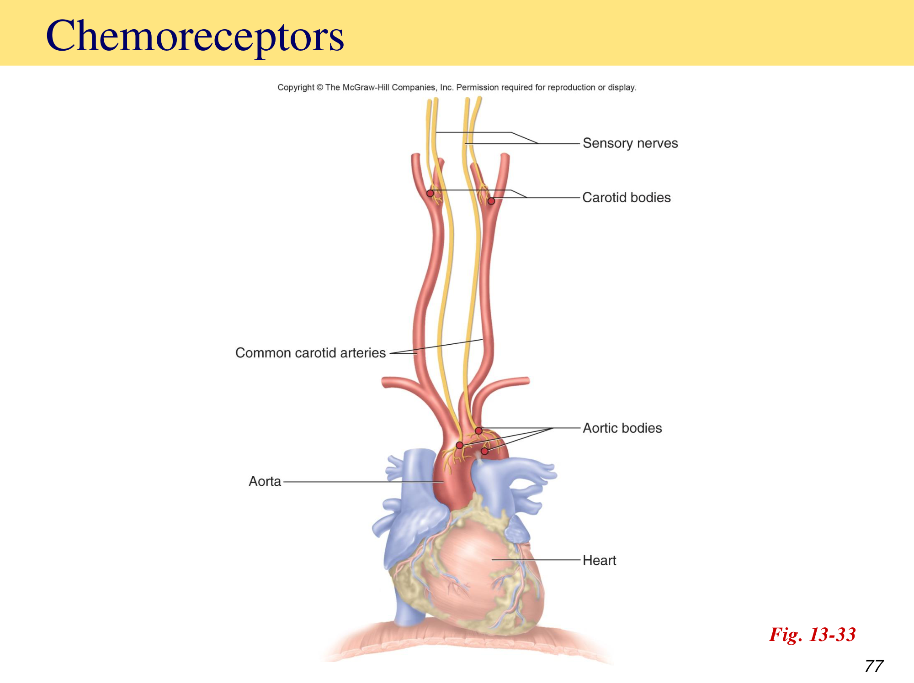

呼吸系統總覽與構造
「呼吸（respiration）」廣義上指從外界環境到粒線體之間氧氣與二氧化碳交換的完整序列，涵蓋四個連續過程，理解這個分層架構是理解全章的骨架。
呼吸的四個組成過程
呼吸道分區
呼吸系統構造可分兩大功能區：傳導區（conducting zone）——鼻腔、咽、喉、氣管、支氣管，負責空氣輸送、加溫加濕過濾，不參與氣體交換；呼吸區（respiratory zone）——肺泡，是氣體交換真正發生的場所。氣管黏膜含杯狀細胞（分泌黏液）與纖毛細胞，纖毛持續擺動將黏液（連同附著的異物與病原體）向上推送清除，是呼吸道重要的物理防禦機制。
長期吸菸會破壞纖毛功能，使黏液無法有效清除，只能依賴咳嗽排除，這是慢性吸菸者常見慢性咳嗽的生理基礎；此概念同樣適用於慢性呼吸道發炎或纖毛不動症候群的動物。
肺泡構造
肺泡是微小中空囊袋，總表面積極大，利於大量氣體快速擴散交換。肺泡壁主要由兩型細胞構成：
扁平單層上皮細胞，構成肺泡壁絕大部分面積，是氣體擴散的主要介面
分泌表面張力素（surfactant），一種類似清潔劑的磷脂物質，見「肺順應性」章節
肋膜 Pleurae
肋膜是雙層漿膜：壁層肋膜（parietal pleura）貼附胸壁與橫膈上表面，臟層肋膜（visceral pleura）包覆肺臟外表面，兩層間的肋膜液提供潤滑、減少呼吸時的摩擦。肋膜炎（pleurisy）是肋膜的感染或發炎（常繼發於肺炎），造成肋膜表面粗糙、摩擦增加，呼吸時產生刺痛；病程進展可能出現肋膜積液，進一步妨礙呼吸。
通氣力學與壓力變化
肺通氣本質上是壓力驅動的氣流，遵循與「血管生理學」章節相同的基本公式 F = ΔP/R；理解肺內外的各種壓力定義，是理解吸氣與呼氣機轉的關鍵。
波以耳定律 Boyle's Law
在固定溫度下，氣體壓力與體積成反比：P₁V₁ = P₂V₂。呼吸運動的本質是先改變胸腔（進而肺臟）容積，容積改變導致壓力改變，壓力差再驅動氣體流動以平衡壓力——「容積先變、壓力後變、氣流隨後」的因果順序是理解吸吐氣機轉的核心邏輯。
呼吸系統的壓力定義（皆相對大氣壓）
| 壓力名稱 | 符號 | 定義 |
|---|---|---|
| 大氣壓 | Patm | 海平面約760 mmHg（1 atm），呼吸系統所有壓力的參考基準 |
| 肺泡內壓（肺內壓） | Palv | 肺泡內的壓力，隨呼吸起伏，但兩次呼吸之間必然回歸等於大氣壓 |
| 肋膜腔內壓 | Pip | 肋膜腔內壓力，同樣隨呼吸波動，但恆常比肺泡內壓低約4 mmHg（負壓） |
| 跨肺壓 | Ptp | Ptp = Palv − Pip，是決定肺臟靜態擴張程度的跨壁壓（transmural pressure） |

肋膜腔負壓是維持肺臟擴張、貼附於胸壁的關鍵——若肋膜腔內壓（Pip）因穿刺傷或肺泡破裂而上升至等於肺泡內壓（Palv），跨肺壓歸零，肺臟將立即塌陷，即氣胸（pneumothorax）的病理生理核心。這是臨床上胸腔外傷或胸腔穿刺後需高度警覺氣胸的生理基礎。
吸氣與呼氣的肌肉動力
橫膈與外肋間肌收縮→胸腔容積增加→肺容積被動隨之擴張（Pip更負）→Palv暫時低於Patm→空氣順壓力梯度流入肺泡，直到Palv再次等於Patm。平靜吸氣是主動耗能過程。
平靜呼氣主要依賴肺臟彈性回縮力與橫膈放鬆（被動過程，不需額外肌肉收縮）：胸腔容積減少→Palv暫時高於Patm→空氣流出，直到壓力再平衡；用力呼氣則需內肋間肌與腹肌主動收縮參與。
肺順應性與表面張力
肺順應性（compliance）可視為「僵硬度」的相反概念，決定同樣的跨肺壓變化能造成多大的肺容積變化，由兩個主要因子決定。
決定肺順應性的兩因子
- 肺組織本身的可延展性——纖維化等病變會降低組織延展性，順應性下降
- 肺泡內氣液交界面的表面張力——水分子間的內聚力傾向使肺泡表面積最小化（即傾向塌陷），是對抗肺擴張的主要阻力來源
表面張力素 Surfactant 的關鍵角色
第II型肺泡細胞分泌的表面張力素，能大幅降低肺泡氣液界面水分子間的內聚力，因而降低表面張力、提升肺順應性、使肺臟更容易被撐開。若無表面張力素，微小肺泡（依拉普拉斯定律，半徑越小、內部壓力越高）將優先塌陷、氣體被推向大肺泡，導致肺泡塌陷與擴張不均。
早產動物（或人類早產兒）因第II型肺泡細胞尚未成熟、表面張力素分泌不足，導致肺順應性極低、肺泡廣泛塌陷，臨床表現為新生兒呼吸窘迫，是新生兒科極重要的病理生理機轉，也是臨床給予外源性表面張力素治療的理論基礎。
肺容積與肺容量
肺容積（volume）指四個彼此不重疊的基本分區；肺容量（capacity）則是兩個或多個肺容積的組合，是臨床肺功能測試（肺量計檢查 spirometry）的核心參數。

四個基本肺容積
| 容積 | 定義 |
|---|---|
| 潮氣容積 Tidal Volume (TV) | 平靜呼吸時每次吸入或呼出的氣量 |
| 吸氣儲備容積 Inspiratory Reserve Volume (IRV) | 平靜吸氣後，能再用力額外吸入的氣量 |
| 呼氣儲備容積 Expiratory Reserve Volume (ERV) | 平靜呼氣後，能再用力額外呼出的氣量 |
| 殘餘容積 Residual Volume (RV) | 最大呼氣後仍留在肺內、無法再呼出的氣量，使肺泡維持部分擴張、防止完全塌陷，並使進入的新鮮空氣得以與肺內既有氣體混合 |
四個常用肺容量
| 容量 | 組成 | 臨床意義 |
|---|---|---|
| 肺活量 Vital Capacity (VC) | IRV + TV + ERV | 最大吸氣後能用力呼出的最大氣量，常用於評估胸廓肌肉力量與整體肺功能 |
| 吸氣容量 Inspiratory Capacity (IC) | TV + IRV | 平靜吐氣末，能再吸入的最大氣量 |
| 功能性肺餘容量 Functional Residual Capacity (FRC) | RV + ERV | 平靜吐氣末，肺內殘留的氣量 |
| 肺總容量 Total Lung Capacity (TLC) | RV + VC | 肺臟所能容納的最大氣體量 |
因肺量計無法直接測量含有殘餘容積（RV）的容量（如FRC、TLC），臨床需另以氦氣稀釋法或體積描記法（body plethysmography）等間接方法測得，此細節常出現在生理學或肺功能檢查相關考題中。
通氣、死腔與灌流配合
並非所有吸入的空氣都能參與氣體交換；同時，肺泡的通氣（air）與灌流（blood）必須適當配合，才能達到有效率的氣體交換，兩者失衡是多種呼吸疾病的共通病理生理基礎。
死腔 Dead Space
氣管與支氣管等傳導區的容積，此區域內的空氣不參與氣體交換
有通氣但未被血液灌流的肺泡容積（正常情況下極少，疾病狀態下可能增加，如肺栓塞）
解剖死腔與肺泡死腔合稱生理死腔。分鐘換氣量與肺泡換氣量的計算公式：
- 分鐘換氣量 = 潮氣容積 × 呼吸頻率（mL/min）——衡量總進出肺臟的氣體量
- 肺泡換氣量 = (潮氣容積 − 死腔) × 呼吸頻率（mL/min）——衡量真正參與氣體交換的有效氣體量，臨床意義更為重要
淺快呼吸（潮氣容積小、頻率高）即使分鐘換氣量正常，因死腔占比相對提高，肺泡換氣量可能反而下降，是理解「為何呼吸急促不代表通氣有效」的關鍵概念，也是臨床評估呼吸窘迫動物換氣效率時的重要考量。
通氣與灌流的配合 V/Q Matching
分流（shunt）：肺泡有正常血液灌流，但通氣不足或缺乏，是肺水腫、肺炎等造成肺實質化（consolidation）疾病導致低血氧的主要機轉。理想狀態下通氣須分布於有灌流的區域、灌流須分布於有通氣的區域，兩者完美配合；實際上因重力效應對肺內通氣與灌流分布的不均等影響，健康個體仍存在小幅度的通氣灌流不匹配，足以使全身動脈血氧分壓略低於理論值（約低5 mmHg）。
肺循環具有與體循環相反的獨特局部調控機制：局部肺泡缺氧會引發該區域肺血管收縮（缺氧性肺血管收縮），將血流從通氣不良的區域導向通氣較佳的區域，是肺臟主動優化整體V/Q配合效率的重要局部機轉，與「血管生理學」章節體循環局部血管對缺氧的舒張反應方向相反，是重要的跨系統比較考點。
氣體擴散
氣體通過肺泡-微血管障壁的交換依賴簡單擴散，遵循Fick擴散定律，理解影響擴散速率的因子有助於理解多種肺部病理狀態如何影響氣體交換效率。
Fick擴散定律
dQ/dt = D × A × (dC/dx)，其中D為擴散係數、A為擴散膜面積、dC/dx為濃度（實際上以分壓差represent）梯度。呼吸表面（肺泡）典型構造是薄且表面積大，以最大化擴散效率。
肺泡-微血管障壁 Alveolar-Capillary Barrier
由三層構造組成：第I型肺泡上皮細胞、基底膜、微血管內皮細胞，功能是允許氣體快速交換，同時防止氣泡進入血液或血液滲入肺泡。肺水腫時組織間隙液體增加，會增加擴散距離、降低擴散效率。
肺擴散能力 DL 的影響因子
- 肺泡-微血管障壁本身的性質（如纖維化會增厚障壁、降低DL）
- 氣體與血紅素的結合親和力
- 肺氣腫或肺纖維化會降低DL；紅血球增多症（polycythemia）則會提升DL（因可結合氣體的血紅素總量增加）
灌流限制 vs 擴散限制的氣體交換
氣體交換速率主要受肺微血管血流速度限制（氣體在微血管早段即已達平衡）。代表氣體：O₂（正常狀態下）、N₂O。唯一能增加此類氣體淨擴散量的方式是增加肺微血管血流量。
氣體交換速率主要受跨障壁擴散過程本身限制，淨擴散量取決於分壓梯度大小。代表氣體：CO（一氧化碳，因其與血紅素親和力極高，血漿分壓始終維持低值以驅動持續擴散）。
臨床上常利用CO的擴散限制特性來測量肺擴散能力（DLCO測試），因CO幾乎不受血流速度影響，測得值能較單純反映肺泡-微血管障壁本身的擴散效率。
氧氣運輸與血紅素飽和
血液中絕大多數氧氣以與血紅素（hemoglobin, Hb）結合的形式運輸，僅極少量以溶解態存在於血漿中，理解血紅素氧飽和曲線的形狀與位移因子，是理解缺氧代償與組織供氧調節的核心。
血紅素結構與攜氧能力
血紅素是含鐵的球蛋白分子，每個血紅素可結合4個O₂分子；氧合時血液呈鮮紅色。肌紅蛋白（myoglobin）是肌肉細胞內類似血紅素的攜氧蛋白，對O₂親和力更高，作為肌肉內部的氧氣儲存與短程運輸分子。
血紅素氧飽和曲線的S形特性
血紅素飽和度對PO₂的關係曲線呈S形（sigmoid），此形狀的生理意義：曲線上段（PO₂ 60–100 mmHg）平坦——即使肺泡PO₂因輕中度肺病或高海拔適度下降（如100降至60 mmHg），血紅素飽和度僅由約98%降至約90%，攜氧總量下降有限，展現對肺部/環境氧分壓中度波動的緩衝耐受性；曲線下段（PO₂ 20–60 mmHg）陡峭——恰好落在組織微血管的生理PO₂範圍，使血紅素在此區間釋放氧氣的效率極高，有利於將氧氣有效卸載至代謝活躍的組織。

使曲線右移（降低Hb-O₂親和力）的四大因子
代謝活躍組織PCO₂與H⁺濃度較高，降低血紅素對O₂的親和力，促進氧氣在此類組織釋放
代謝活躍組織產熱增加，同樣降低Hb對O₂親和力，利於局部卸氧
紅血球糖解作用（紅血球無粒線體，完全依賴糖解）的代謝產物，在慢性缺氧狀態（如高海拔）濃度上升，長期適應性地促進組織卸氧
低氧刺激腎臟於2小時內釋放EPO，4–5天後新生紅血球進入循環；同時DPG濃度上升，兩者共同構成短期與中期的缺氧適應策略
四個右移因子（PCO₂↑、H⁺↑／pH↓、溫度↑、DPG↑）恰好都是代謝旺盛組織的局部生理特徵——這正是血紅素氧親和力調控的精妙之處：氧氣會優先在最需要它的組織被釋放，是一種依需求自動調節的分配機制，而非單純的物理擴散結果。
二氧化碳運輸
CO₂在血液中以三種形式運輸，其中以碳酸氫根形式占絕大多數，此過程同時是酸鹼恆定調控的核心環節（與「腎臟生理學基礎」章節酸鹼平衡相互呼應）。
CO₂運輸的三種形式
| 形式 | 占比 | 說明 |
|---|---|---|
| 溶解態CO₂ | 約10% | 直接溶解於血漿，CO₂在體液中的溶解度高於O₂ |
| 與蛋白質結合（胺甲醯血紅素） | 約25–30% | CO₂與血紅素的胺基結合形成carbaminohemoglobin（HbCO₂） |
| 碳酸氫根 HCO₃⁻ | 約60–65% | CO₂經碳酸酐酶（carbonic anhydrase, CA）催化與水結合形成碳酸，再解離為HCO₃⁻與H⁺，是CO₂運輸的主要形式 |

氯轉移 Chloride Shift
紅血球內生成的HCO₃⁻大量排出至血漿以維持濃度梯度持續反應，為了維持紅血球內電中性，血漿中的Cl⁻同時反向移入紅血球，此現象稱氯轉移；到達肺部時，因CO₂被呼出使反應方向逆轉，Cl⁻則反向移出紅血球，整個過程完全可逆。
氫離子的緩衝運輸
去氧血紅素對H⁺的親和力遠高於氧合血紅素，因此組織微血管中新生成的H⁺大部分被去氧血紅素結合緩衝，僅極少量以游離態存在，這解釋了為何靜脈血（pH≈7.36）僅比動脈血（pH≈7.40）略為偏酸——血紅素本身扮演了重要的血液緩衝系統角色。血液流經組織時去氧血紅素形成並結合H⁺；流經肺部時去氧血紅素重新氧合，釋放H⁺（此H⁺隨即與HCO₃⁻結合逆向反應生成CO₂並呼出）。
呼吸中樞調控
呼吸運動雖可意識控制，但基礎節律性呼吸主要由延腦自主產生，並受化學感受器持續回饋調整，以維持血液氣體分壓與酸鹼度的恆定。
延腦呼吸節律產生
延腦的延腦呼吸群（含背側呼吸群、腹側呼吸群）是產生基礎呼吸節律的核心，腹側呼吸群的神經元活動決定吸氣與呼氣的規律交替。Hering-Breuer反射：肺過度擴張時，肺牽張受器經迷走神經傳入訊號抑制吸氣，防止肺過度膨脹，是一種保護性負回饋。
嗎啡、巴比妥類藥物或酒精過量會抑制延腦腹側呼吸群神經元活性，可能導致呼吸完全停止，是這類藥物中毒致死的關鍵機轉，臨床麻醉與鎮靜藥物使用時需特別注意呼吸抑制風險。
化學感受器 Chemoreceptors

| 類型 | 位置 | 主要偵測訊號 |
|---|---|---|
| 周邊（動脈）化學感受器 | 頸動脈體、主動脈體 | 主要偵測動脈血PO₂大幅下降（低血氧），對PCO₂/pH變化也有一定敏感度 |
| 中樞化學感受器 | 延腦 | 偵測腦脊髓液（CSF）的H⁺濃度變化（CO₂可自由通過血腦障壁，在CSF中轉為H⁺），是調節每分鐘通氣量對PCO₂變化最主要、最敏感的感受器 |
正常生理狀態下，驅動呼吸最主要的訊號是動脈PCO₂（經中樞化學感受器），而非PO₂——PO₂需要下降到相當低的程度（如60 mmHg以下）才會顯著刺激周邊化學感受器驅動呼吸。此概念在慢性阻塞性肺病（COPD）動物身上有重要臨床意義：長期高碳酸血症使中樞感受器對PCO₂反應閾值上移（適應性重設），此類病患可能轉為依賴低氧（PO₂）作為主要呼吸驅動訊號，過度給氧可能反而抑制其呼吸驅動力。
壓力感受器對呼吸的影響
動脈壓力感受器（見「心血管功能整合」章節）主要調控心血管功能，但也能對延腦呼吸中樞產生一定程度的輸入影響，顯示心血管與呼吸調控中樞在延腦有相當程度的功能整合，而非完全獨立運作。
臨床連結與肺的其他功能
除氣體交換外，肺臟還執行多項非典型但同樣重要的生理功能，理解這些延伸功能有助於全面評估肺部疾病的臨床影響。
一氧化碳中毒 Carbon Monoxide Poisoning
CO是無色無味氣體，是火場死亡的主要成因之一，其病理機轉是與血紅素的親和力約為O₂的200倍，競爭性佔據O₂結合位，導致嚴重缺氧（屬於低血氧性缺氧的一種變異，血氧飽和度計可能無法正確反映）。臨床表現為意識混亂、呼吸窘迫，皮膚呈現櫻桃紅色（cherry red），不會出現發紺（no cyanosis）——因血液中仍充滿飽和的血紅素（只是結合CO而非O₂），這是CO中毒容易被誤判、延遲診斷的重要臨床陷阱。治療以高濃度氧氣或高壓氧治療，加速CO與血紅素解離。
肺臟的非氣體交換功能
過濾靜脈系統形成的小血栓；過濾潛水減壓後靜脈血中形成的氣泡，避免其進入體循環動脈造成栓塞
肺循環容納全身循環血量約9%，此容量可在一定範圍內波動；出血時可部分經肺循環釋出血液至體循環代償
經呼氣散熱；排除揮發性代謝廢物，如糖尿病酮酸中毒的丙酮（acetone）氣味、肝衰竭的甲硫醇（methyl mercaptan）氣味
微血管內皮細胞（如ACE，見「心血管功能整合」章節RAAS）對特定激素進行代謝活化或去活化
臨床嗅診（如糖尿病酮酸中毒動物呼氣帶「甜味／丙酮味」、肝衰竭動物呼氣帶特殊「肝臭味」）即是利用肺臟揮發性物質排除功能的臨床應用，是病史詢問與理學檢查中容易被忽略但診斷價值高的線索。
學習重點整理
本章的核心是「壓力驅動氣流」貫穿通氣力學，以及「血紅素氧親和力的動態調控」貫穿氣體運輸。考題常考「跨肺壓與氣胸機轉」「肺容積容量計算」「Hb飽和曲線右移因子」「CO2三種運輸形式占比」「中樞vs周邊化學感受器」。
練習題
涵蓋通氣力學、肺容積容量、氣體擴散、氧氣與二氧化碳運輸、呼吸調控等章節重點，題型參照國考與轉學考命題方向（含計算題與臨床病例題），先自己作答再點「顯示答案」核對。
跨肺壓 Ptp = Palv − Pip 是維持肺臟靜態擴張的關鍵跨壁壓，正常情況下Pip恆比Palv低約4 mmHg（負壓）。若因穿刺傷使肋膜腔與大氣相通，Pip會上升至等於Palv（甚至等於大氣壓），跨肺壓歸零，肺臟因失去撐開的力量而立即塌陷，即氣胸的病理生理核心機轉。
肺泡換氣量 = (潮氣容積 − 死腔) × 呼吸頻率 = (400 − 100) × 20 = 300 × 20 = 6000 mL/min。此為國考與轉學考常見的計算題型，需注意與分鐘換氣量（=TV×頻率=400×20=8000 mL/min，選項C為此常見誤答）的區別：分鐘換氣量涵蓋所有進出的氣體，肺泡換氣量才是真正參與氣體交換的有效通氣量。
肺總容量（TLC=RV+VC）包含殘餘容積（RV），而RV是最大呼氣後仍留在肺內、無法呼出的氣量，肺量計只能測量進出肺臟的氣體變化，無法測得肺內始終存在的殘餘氣體，因此含有RV的容量（FRC、TLC）皆無法用肺量計直接測得，須以氦氣稀釋法或體積描記法等間接方法測量。
代謝旺盛組織具有PCO₂上升、H⁺濃度上升（pH下降，波爾效應）、溫度上升的局部生理特徵，加上慢性缺氧狀態下紅血球DPG濃度上升，這四個因子皆會降低血紅素對O₂的親和力、使氧飽和曲線右移，促進氧氣優先在最需要的代謝旺盛組織釋放，是一種依需求自動調節的精妙機制。
CO₂約60–65%以碳酸氫根形式運輸（經碳酸酐酶催化CO₂與水結合形成碳酸，再解離為HCO₃⁻與H⁺），約25–30%與血紅素結合形成胺甲醯血紅素（carbaminohemoglobin），僅約10%以溶解態直接存在於血漿中，三者合計為血液CO₂運輸的完整途徑。
正常生理狀態下，驅動呼吸最主要、最敏感的訊號是動脈PCO₂的變化：CO₂可自由通過血腦障壁進入腦脊髓液，在CSF中轉為H⁺後被中樞化學感受器偵測。PO₂則需下降到相當低的程度（如60 mmHg以下）才會顯著刺激周邊化學感受器驅動呼吸，平時對呼吸驅動的貢獻相對較小。
正常情況下，驅動呼吸最主要的訊號是動脈PCO₂經中樞化學感受器偵測腦脊髓液中H⁺濃度變化。但慢性阻塞性肺病動物長期處於高碳酸血症狀態，中樞化學感受器對PCO₂的反應閾值會發生適應性重設（上移），使其對PCO₂升高的敏感度降低，呼吸驅動因而逐漸轉為依賴周邊化學感受器對「低血氧（PO₂下降）」的偵測作為主要驅動訊號。此時若給予過高濃度氧氣，會使動脈PO₂快速回升至周邊化學感受器不再感受到「缺氧」的程度，移除了此類病患僅存的主要呼吸驅動訊號，可能導致呼吸抑制甚至呼吸暫停，這是臨床對COPD病患給氧需謹慎控制濃度、採漸進式給氧的生理基礎。
CO與血紅素的親和力約為O₂的200倍，會競爭性佔據O₂結合位造成嚴重的組織缺氧，但因血紅素本身仍處於「飽和」狀態（只是結合的是CO而非O₂），血液與皮膚外觀呈現特徵性的櫻桃紅色，而非一般缺氧常見的發紺（藍紫色，源自大量去氧血紅素），這是CO中毒容易被誤判、延遲診斷的重要臨床陷阱，臨床評估疑似火場吸入性損傷動物時應特別留意。
肺循環具有獨特的「缺氧性肺血管收縮」機制：局部肺泡缺氧會引發該區域肺血管收縮，將血流導向通氣較佳的區域，以優化整體通氣灌流配合效率；這與「血管生理學」章節提到的體循環局部血管在缺氧時多呈現舒張反應（主動充血，增加該區域血流以改善缺氧）方向完全相反，是呼吸與血管生理學跨章節整合的重要比較考點。
O₂在正常狀態下屬灌流限制氣體，因其在肺微血管早段即已與血紅素達到平衡，唯一能增加淨擴散量的方式是增加血流量；CO則屬擴散限制氣體，因其與血紅素親和力極高、血漿分壓始終維持低值，淨擴散量主要取決於跨障壁的分壓梯度大小，而非血流速度，臨床上正是利用CO這個特性作為DLCO測試，較單純反映肺泡-微血管障壁本身的擴散能力。